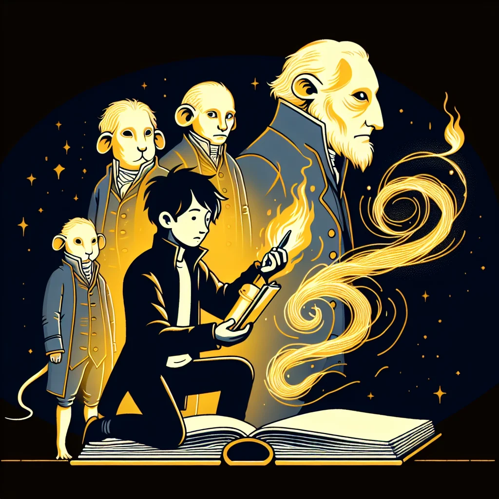

{kind=link}
{kind=link}
Tales from the Tunnel: Exploring Ratopolis' Oldest Literary Clubs
Beneath the bustling streets of Ratopolis lie hidden literary clubs where generations of rat writers and poets have gathered to share their timeless tales and foster a rich cultural heritage.
4 minute read

The hidden tunnels of Ratopolis echo with the whispers of countless stories. These storied tunnels, home to the oldest literary clubs, have seen the birth of many great works. From prose to poetry, these gatherings have been the heart of Ratopolis' literary scene for generations.
One such club is the Underground Scrolls Society, founded over a century ago. It was established by a group of visionary rats who believed in the power of literature to change the world. Among these founders was Whiskers McSqueak, a name still revered in rat literary circles.
"These tunnels have echoed with the whispers of countless tales. It's where our history lives and breathes," says Whiskers McSqueak, a veteran member of the oldest club. His enthusiasm is infectious, drawing many young rats into the fold.
Today, these clubs continue to play a vital role. They influence modern rat literature and nurture new talents. Penelope Paws, a young poet, speaks fondly of her experience. "Joining the club was like finding a family of kindred spirits. We share more than just stories; we share our souls."
The cultural significance of these clubs is immense. They serve as the keepers of Ratopolis' folklore and stories, ensuring these rich narratives are not lost to time. Young writers find inspiration here, fueling their creativity and connecting them to their roots.
Squeaky Shakespeare, a renowned rat playwright, chuckles as he shares his perspective. "It's not just about the cheese; it's about the legacy we leave behind." His words highlight the deeper purpose of these gatherings.
Some of Ratopolis' most famous works have emerged from these clubs. From epic poems to heartwarming short stories, the creativity that flows in these tunnels is unparalleled. Excerpts from these works often feature in local school curriculums, inspiring young minds.
However, these clubs are not without challenges. Modern distractions and diminishing interest in literature pose significant threats. Despite these, efforts to preserve and promote rat literature for future generations persist.
Luna Longtail, a local historian, emphasizes the importance of these clubs. "They are the guardians of our cultural heritage. Losing them would mean losing a part of our identity." Her sentiment is echoed by many in the rat community.
The physical locations of these clubs are as intriguing as the stories they produce. Tucked away in corners of the underground, they are filled with the scent of old parchment and the soft rustle of turning pages. Anecdotes of late-night readings and spirited debates add to their charm.
One lesser-known story is of an old club meeting where a heated debate over a piece of cheese led to one of the most famous rat plays, "The Cheese Capers." Such tales highlight the vibrant, passionate nature of these gatherings.
comments from experts like Luna Longtail and testimonials from aspiring writers like Nibbles Nutkin further illustrate the clubs' impact. "I wouldn't have found my voice as a writer without these clubs," says Nibbles Nutkin, beaming with pride.
Yet, some argue that these clubs are exclusive and out of touch with the times. There's a call for modernization and inclusivity. Veteran member Maxwell Munch responds, "We've always been open to new blood. Our doors are wide open for those willing to dive into the literary depths."
In conclusion, the literary clubs of Ratopolis are more than just gatherings. They are the lifeblood of the rat community's cultural heritage. Their ongoing importance cannot be overstated. As the stories and traditions continue to thrive, they beckon new generations to join the literary quest.
Exploring these clubs and their rich history encourages us to support and preserve local literary initiatives. Attending upcoming events or even joining a club can be an excellent way to keep the legacy alive.
So, dear reader, dive into the depths of Ratopolis' literary tunnels. Discover the timeless tales, the whispers of history, and the camaraderie that binds our society together. The next chapter awaits your pen.
Looking for more in-depth news and exclusive content? Follow RAT TV for real-time updates, behind-the-scenes insights and the latest breaking news.
One such club is the Underground Scrolls Society, founded over a century ago. It was established by a group of visionary rats who believed in the power of literature to change the world. Among these founders was Whiskers McSqueak, a name still revered in rat literary circles.
"These tunnels have echoed with the whispers of countless tales. It's where our history lives and breathes," says Whiskers McSqueak, a veteran member of the oldest club. His enthusiasm is infectious, drawing many young rats into the fold.
Today, these clubs continue to play a vital role. They influence modern rat literature and nurture new talents. Penelope Paws, a young poet, speaks fondly of her experience. "Joining the club was like finding a family of kindred spirits. We share more than just stories; we share our souls."
The cultural significance of these clubs is immense. They serve as the keepers of Ratopolis' folklore and stories, ensuring these rich narratives are not lost to time. Young writers find inspiration here, fueling their creativity and connecting them to their roots.
Squeaky Shakespeare, a renowned rat playwright, chuckles as he shares his perspective. "It's not just about the cheese; it's about the legacy we leave behind." His words highlight the deeper purpose of these gatherings.
Some of Ratopolis' most famous works have emerged from these clubs. From epic poems to heartwarming short stories, the creativity that flows in these tunnels is unparalleled. Excerpts from these works often feature in local school curriculums, inspiring young minds.
However, these clubs are not without challenges. Modern distractions and diminishing interest in literature pose significant threats. Despite these, efforts to preserve and promote rat literature for future generations persist.
Luna Longtail, a local historian, emphasizes the importance of these clubs. "They are the guardians of our cultural heritage. Losing them would mean losing a part of our identity." Her sentiment is echoed by many in the rat community.
The physical locations of these clubs are as intriguing as the stories they produce. Tucked away in corners of the underground, they are filled with the scent of old parchment and the soft rustle of turning pages. Anecdotes of late-night readings and spirited debates add to their charm.
One lesser-known story is of an old club meeting where a heated debate over a piece of cheese led to one of the most famous rat plays, "The Cheese Capers." Such tales highlight the vibrant, passionate nature of these gatherings.
comments from experts like Luna Longtail and testimonials from aspiring writers like Nibbles Nutkin further illustrate the clubs' impact. "I wouldn't have found my voice as a writer without these clubs," says Nibbles Nutkin, beaming with pride.
Yet, some argue that these clubs are exclusive and out of touch with the times. There's a call for modernization and inclusivity. Veteran member Maxwell Munch responds, "We've always been open to new blood. Our doors are wide open for those willing to dive into the literary depths."
In conclusion, the literary clubs of Ratopolis are more than just gatherings. They are the lifeblood of the rat community's cultural heritage. Their ongoing importance cannot be overstated. As the stories and traditions continue to thrive, they beckon new generations to join the literary quest.
Exploring these clubs and their rich history encourages us to support and preserve local literary initiatives. Attending upcoming events or even joining a club can be an excellent way to keep the legacy alive.
So, dear reader, dive into the depths of Ratopolis' literary tunnels. Discover the timeless tales, the whispers of history, and the camaraderie that binds our society together. The next chapter awaits your pen.
Looking for more in-depth news and exclusive content? Follow RAT TV for real-time updates, behind-the-scenes insights and the latest breaking news.
Comments